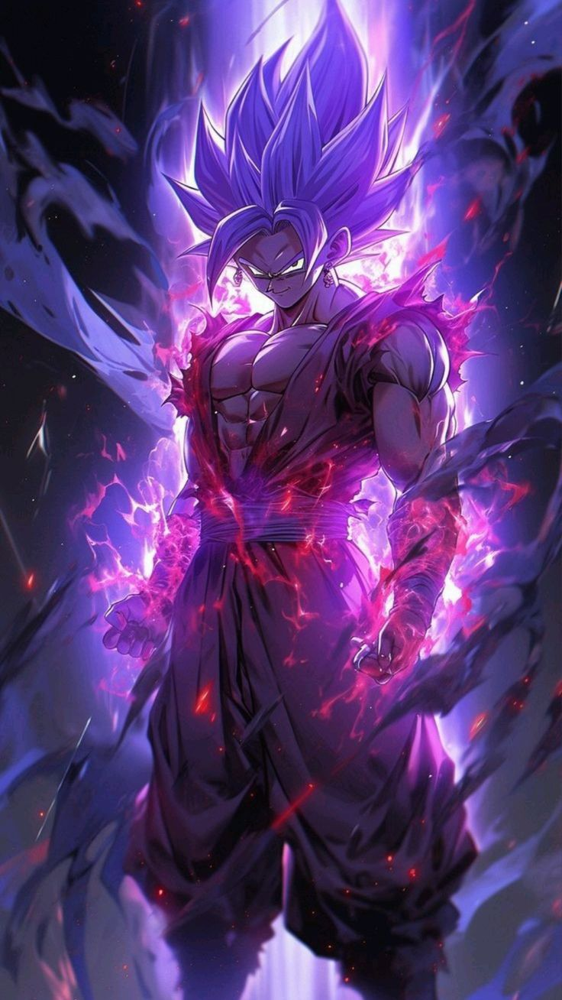

The Evolution of Anime
Anime isn’t just entertainment; it’s an art form that blends visual storytelling with emotional depth. From legendary series like Naruto and Dragon Ball Z to modern masterpieces like Attack on Titan and Demon Slayer, anime has captured hearts worldwide.

Iconic Anime Characters That Changed Pop Culture
Meet characters like Goku, Luffy, Ichigo, and Saitama—heroes who inspire us with their strength, resilience, and unforgettable journeys.
"Power comes in response to a need, not a desire." — Goku, Dragon Ball Z
Why Anime Stands Out
Anime’s unique blend of stunning visuals, compelling plots, and cultural depth sets it apart. Its ability to explore themes of friendship, perseverance, and morality resonates with fans of all ages.
← Back to Home